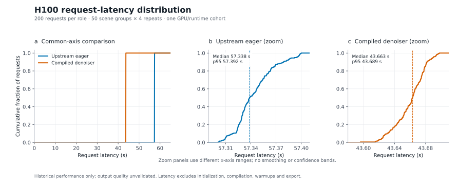
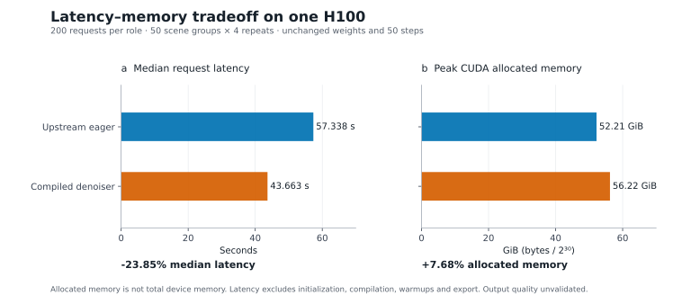
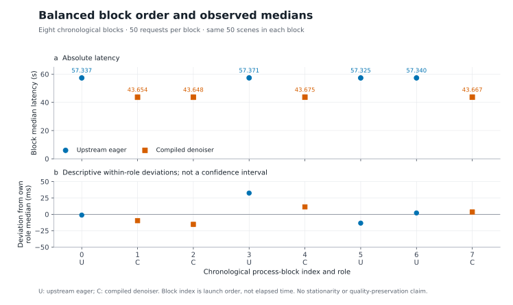

1 Overview
Can an automatic evaluator reward faster video-world-model inference while rejecting meaningful output degradation? DriveBench studies this question through modern execution baselines, empirically calibrated quality checks, and reproducible configuration search.
The task is to reduce inference cost on a declared device and workload under a fixed quality constraint. A useful reward must distinguish real gains from timing noise, preserve failed attempts, and withstand submissions that exploit the evaluator.
Research in progress · 14 November 2026. The small one-episode, eight-configuration, three-policy study has been canceled. Work now starts with a modern Vista baseline and fresh-process measurement. Modern GPU results, calibrated verifier error rates, the large lookup table, and policy-transfer findings are not yet available. Historical results below remain a separate legacy cohort.
2 Legacy H100 inference results
Pretrained Vista with unchanged weights: eager execution versus a torch.compile / Inductor denoiser. Each request generates 24 future frames at 576 × 1024 from a conditioning image and trajectory, using 50 denoising steps and one future.
| Measurement | Upstream eager | Compiled denoiser | Relative change |
|---|---|---|---|
| Median request latency (s) | 57.338 | 43.663 | −23.85% |
| 95th-percentile latency (s) | 57.392 | 43.689 | −23.88% |
| Sequential throughput (futures/s) | 0.01744 | 0.02290 | +31.34% |
| Peak allocated memory (GiB) | 52.21 | 56.22 | +7.68% |
50 independent scenes × 4 repeated requests per role; eight blocks in order U,C,C,U,C,U,U,C. All 400 measured requests succeeded, with no recorded failures or OOM attempts. Throughput is completed futures divided by summed measured duration; memory is the CUDA allocator peak, not total device memory.
Measurement boundary: input loading and preprocessing through host-ready frames. Initialization, compilation, warmups, and output export are excluded. Hardware and runtime were fixed within this cohort: H100 80GB, Torch 2.0.1+cu118, xFormers 0.0.20, driver 580.178.04.






Block chronology, uncertainty, and source data
The eight interleaved blocks each contain 50 measured requests. The median latency reduction has a 95% scene-cluster percentile interval of 23.846%–23.858%, using 4,000 paired resamples of the 50 scenes and retaining all repeats in each draw. This interval describes this cohort; it does not establish stationarity or transfer to another GPU.



All numerical rows and the bootstrap schedule are published in the numerical audit. The standalone analysis script reconstructs 48 fields from the historical summary. Source hashes connect the public projection to retained records; hashes alone do not independently verify the physical experiment.
Figure data: JSON · CSV · Captions and methods · SHA-256 manifest
Reproduce the plots: Python generator · Plotting environment and instructions. The generator verifies the pinned public observations before plotting; it performs no new GPU measurements.
Interpretation: a measured performance and memory tradeoff, not a joint speed–quality result. Compiled outputs were not strictly pixel-identical to eager outputs, and the planned 16-pair held-out quality evaluation was not completed. The historical result remains qualified: false and quality_preserving: false.
3 Research program
The environment is intended for agents that inspect measurements, change settings or code, and submit a candidate under a finite compute budget. Its central research object is the verifier: acceptance should depend on measured quality and correctness, and reward should reflect gains larger than measurement noise.
- 01
Measure
Establish a modern baseline, cold cost, and runtime attribution.
- 02
Calibrate
Freeze quality thresholds on development data; audit on separate labels.
- 03
Tabulate
Measure repeated configuration cells, including failures and OOMs.
- 04
Compare
Replay policies, confirm selections live, and test hardware transfer.
Planned study dependencies. This diagram describes the protocol, not completed experimental results. Code-action evaluation follows the measurement and verifier gates.
| Phase | Required evidence | Current status |
|---|---|---|
| 1 · Modern baseline | Legacy eager, modern eager, modern compiled; repeated process restarts, cold cost, break-even, and stage/operator attribution. | Implementation; GPU validation pending. |
| 2 · Quality verifier | Seed/precision variability; distributional and trajectory checks; false accepts and false rejects on independently labeled configurations. | Prospective design. No calibrated thresholds. |
| 3 · Tabulated search | A conditional space of 1,000+ configurations; measured repeated cells, per-cell noise, and latency/memory/quality Pareto front. | Prospective design. No released lookup table. |
| 4 · Policy and transfer | Random, Sobol, TPE, successive halving, LLM ± trial history; 20+ seeds each, live confirmations, and a second-GPU table. | Depends on measured tables. No rankings. |
| 5 · Code actions | Isolated submissions, profile-selected ops, hack rejection, KernelBench subset, and an end-to-end Vista swap. | Threat model only. No validated code-execution sandbox. |
| 6 · Write-up | A finding supported by the preceding experiments, including a null result if warranted. | Pending evidence. No paper claim. |
Next experiment: a bounded memory-fit and request-cost check on cheaper hardware, starting with a 48 GB Ampere candidate if available. The workload stays fixed; fitting the full model and preserving its outputs are unproven. Device choice will use measured request cost, not hourly price alone. The large table remains a later coverage and budget gate.
The released configuration interface supports tools, budgets, and evaluator-owned final scoring. Its old fixed proxy limits and finite action examples are historical software artifacts, not the calibrated verifier or broad search space above. Synthetic examples are software smoke tests only.
Baseline and quality-gate design
The modern Vista port preserves trained action-control projections while replacing attention with native scaled dot-product attention. FP16 and channels-last are explicit treatments. Compatibility, output correctness, memory, and end-to-end speed still require validation on real hardware.
Modern eager and compiled roles are paired on the same device and runtime across fresh processes. The legacy row reuses existing observations and is labeled as a different cohort; no more legacy eager-versus-compiled runs are planned. Cold-prefix cost is reported separately from steady latency. If modern eager removes the compile advantage, that is a result to report.
Seed and precision variation provide calibration candidates, not automatic ground truth for visual validity. Independent labels and a disjoint audit set are needed to estimate gate errors. Cheap seed-matched proxies guide development; final scoring additionally needs distributional and trajectory-following checks owned by the evaluator.
4 Evidence and limitations
| Record | Status | Supported conclusion and boundary |
|---|---|---|
| H100 inference comparison30 October 2026 | GPU measured | 200 requests per role, 50 scenes, one device/runtime. Performance and memory only; held-out quality evaluation incomplete. |
| A100 operator experiments7 November 2026 | GPU measured | Historical correctness, timing, memory, and small search experiments. No demonstrated RL advantage or whole-video improvement. |
| Modern baseline and calibrated verifier | Not measured | No modern speedup, compile break-even, distributional quality result, trajectory result, or gate error rate is claimed. |
| Configuration tables, policy comparison, and transfer | Not measured | No policy superiority, complete 1,000-config table, or cross-device transfer finding exists. |
What remains to be established
- A current execution baseline and trustworthy compile break-even measurement.
- Verifier false-accept and false-reject rates on independently labeled, held-out cases.
- Repeated tables, equal-budget policy comparisons, and live confirmation of selected configurations.
- Second-device transfer, adversarial code execution, and an independently reproducible end-to-end result.
No peer-reviewed paper or DOI is claimed. The research protocol documents these next steps; the results index preserves prior cohorts and failed attempts.
5 Reproduction
The public numerical audit reconstructs the historical H100 results without rerunning inference. For a new experiment, use the active research protocol and record the exact source, workload, device, and runtime; historical measurements cannot certify a new host.
python tools/analyze_h100_timing.py --output h100-reconstructed.jsonThe analysis verifies inputs and reconstructs latency, throughput, allocator peaks, block summaries, and scene-cluster intervals. This reanalysis uses published numerical observations; it does not rerun inference.
Software installation and smoke tests — not research evidence
Python 3.10+ is sufficient for these synthetic software smoke tests. No GPU, model weights, driving data, or API key is needed. Record the exact commit used; create a new output directory for each run.
git clone https://github.com/rahul-mahadik/driving-world-model-inference.git
cd driving-world-model-inference
git rev-parse HEAD
python3 -m venv .venv
. .venv/bin/activate
python -m pip install . ./extensions/kernel_tuning
drivebench-demo --output ./video-demo
drivebench-search run --backend synthetic --split validation \
--policy random --output ./search-demo
drivebench-agent-demo --output ./agent-demoThese examples exercise software integration. Their synthetic timing and reward values are not research results. The clean-install reproduction guide also builds wheels and runs the demos outside the checkout.
Requirements for a real GPU reproduction
A new operator run needs a dedicated compatible NVIDIA GPU and the pinned operator environment. A full Vista study additionally needs separately acquired licensed weights/data, pre-staged metric assets, a protected evaluator, and complete evidence storage. The project does not provision compute or make payments.
There is no downloadable prebuilt DriveBench Vista image. Public source recipes describe environment construction, but actual builds, profiler support, memory capacity, and native attention must be verified on the reproducer’s host. Historical image IDs or proof files cannot certify another machine.
Environment and asset acquisition · Historical agent recipe (canceled study) · Measurement protocol
6 Citation and references
Cite the software and include the exact Git commit and protocol used. The repository provides CITATION.cff; it does not identify a peer-reviewed paper.
@software{mahadik_drivebench_2026,
author = {Mahadik, Rahul},
title = {DriveBench: Verifiable Rewards for Lossy
World-Model Inference},
year = {2026},
url = {https://github.com/rahul-mahadik/driving-world-model-inference}
}- Public benchmark protocol. Workload identities, measurement boundaries, and comparison rules.
- Historical H100 numerical audit. All 400 measured rows, provenance, bootstrap schedule, and reconstruction code.
- Prospective research validation protocol. Modern baselines, calibrated gates, tabulated search, hardware transfer, and code-action evaluation.
- Third-party notices. Separately licensed model, dataset, and dependency assets.